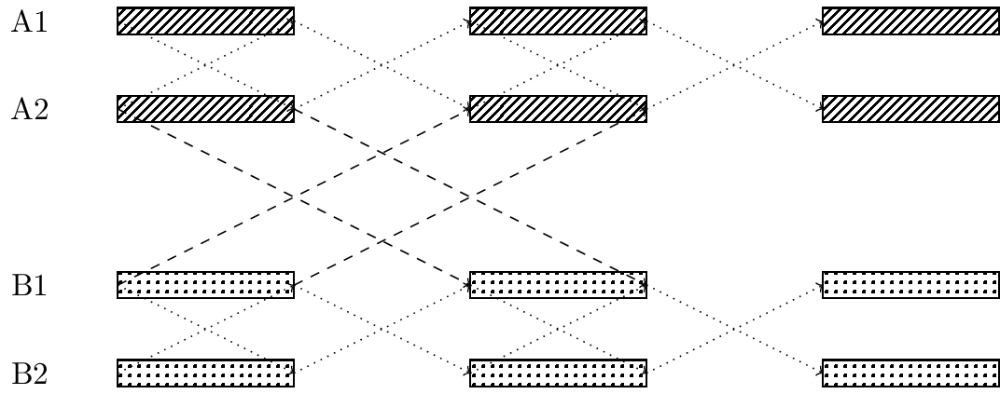
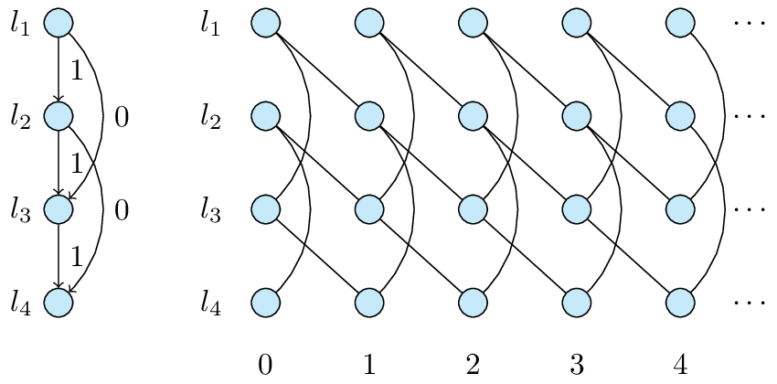

Wireless Network Scheduling with Propagation Delay
Wireless Communication Scheduling Approaches
Wireless communication resources are shared among multiple users, requiring reasonable scheduling to avoid interference. From the research in both underwater acoustic communications and the time-domain interference alignment, significant network throughput gain can be obtained by taking the signal propagation delay into consideration.
Traditional Scheduling Approach
To intuitively understand the interference problem in wireless communications, we can use a round-table meeting analogy. Imagine \(2n\) people sitting around a table, each trying to communicate with the person directly opposite them. If multiple people speak simultaneously, due to mutual interference, it will be difficult for each person to hear the other person clearly. To solve this problem, a simple approach is to stipulate that only one person can speak at any given time.
In cellular wireless communication systems, this strategy of avoiding interference is also employed. However, this also means that as the number of users increases, the communication rate for each user will correspondingly decrease.
Figure 1: Illustration of a Round-Table Meeting
Scheduling Approach Considering Delays
If we consider the propagation delay of sound waves, theoretically, there is a method that allows two people to speak simultaneously without causing interference. Assume the propagation delay between two individuals is \(T\). We can divide time into a series of consecutive intervals, each of length \(T\), and arrange for these two individuals to speak during odd intervals and listen during even intervals. In this way, they can both hear each other without interference.
This method can also be extended to the case of \(2n\) individuals. To simplify the problem, we make the following assumptions: The propagation delay of sound waves between two people directly opposite each other around the table is an odd multiple of a certain duration \(T\), while the propagation delay between two people not directly opposite each other is an even multiple of \(T\). We divide time into consecutive intervals of length \(T\) and arrange for everyone to speak during odd intervals and listen during even intervals. Thus, all conversations will be interference-free. Using this method, theoretically, each person's communication efficiency can be increased by a factor of \(n\).

Figure 2: Odd-Even Scheduling. A1 and A2 form a pair, B1 and B2 form another pair.
Theoretical Progress
For general wireless communication networks, propagation delays are not as special as assumed in the above example, so the odd-even scheduling cannot be used to avoid interference. Designing the optimal network scheduling is an open problem for more than a decade.
In our recent papers [1], [2], we gave a systematic theoretical study on the use of propagation delays, including an explicit characterization of the scheduling rate region that considers propagation delays, and a set of algorithms to calculate the optimal scheduling scheme. We also studied the continuity properties of the scheduling rate region [3], which confirms the existence of scheduling gains from considering delays in more general situations, without requiring very specific delays.

Figure 3: Periodic Graph Extended from the Interference Description Graph
Application Prospects
Initially, the consideration of delays was mainly focused on underwater acoustic wireless communications. This is because the propagation delay of sound waves is relatively large. For traditional terrestrial wireless communications like 4G, the typical propagation delay of electromagnetic signals is relatively small compared to the symbol duration. Therefore, in scheduling, delays are usually regarded as an adverse factor that requires additional guard intervals to address. However, as wireless communications adopt higher and higher frequency spectra, symbol durations become shorter than typical propagation delays, making delay a beneficial factor.
As shown in the table below, if the OFDM symbol length is small relative to the delay, considering the delay may yield performance gains. In the 5G millimeter-wave band, the transmission delay can already be much smaller than the OFDM symbol length.
| Speed (km/s) | Distance (km) | Delay (s) | OFDM Subcarrier Spacing (kHz) | OFDM Symbol Length (s) | |
|---|---|---|---|---|---|
| Underwater Sound | \(1.5\) | \(3\) | \(2\) | \(0.005\) | \(0.2\) |
| 4G EM Waves | \(3\times 10^5\) | \(3\) | \(1 \times 10^{-5}\) | \(15\) | \(6.67\times 10^{-5}\) |
| 5G EM Waves | \(3\times 10^5\) | \(3\) | \(1 \times 10^{-5}\) | \(15\times 2^{6}\) | \(1.04\times 10^{-6}\) |